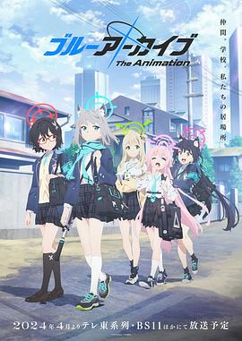

蔚蓝档案 The Animation / ブルーアーカイブ The Animation
又名：碧蓝档案 / Blue Archive The Animation / ブルアカTVアニメ
设定很棒，角色很棒，剧情一般甚至有点不完整，音乐不错。 //难得从小玩到大的Nexon的游戏动画化，还是要观摩下，虽然感觉有点费萌番倾向，但是配色很棒
作品信息
| 导演 | 山岸大悟 / 牧俊治 |
| 编剧 | 大野木宽 / 山岸大悟 |
| 主演 | 小仓唯 / 花守由美里 / 大桥彩香 / 三浦千幸 / 原田彩枫 / 近藤玲奈 / 藤井雪代 / 石飞惠里花 / 大久保瑠美 / 小原好美 / 坂田将吾 |
| 类型 | 动画 |
| 制片国家/地区 | 日本 |
| 语言 | 日语 |
| 首播 | 2024-04-07(日本) |
| 集数 | 12 |
| 单集片长 | 24分钟 |
| IMDb | tt30989205 |
说过什么
2024-06-29 20:30:42
看过 · 时间来自广播，短评来自标记页
设定很棒，角色很棒，剧情一般甚至有点不完整，音乐不错。 //难得从小玩到大的Nexon的游戏动画化，还是要观摩下，虽然感觉有点费萌番倾向，但是配色很棒
2024-05-12 14:43:19
广播 · 在看
难得从你还小玩到大的Nexon的游戏动画化，还是要观摩下，虽然感觉有点费萌番倾向，但是配色很棒
最后一次看到是 2026-08-01T11:04:21+10:00 · 豆瓣原页